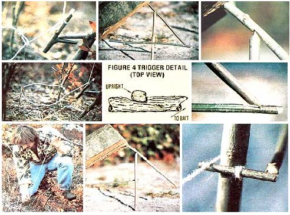

Tom Brown, Jr. was brought up in the ways of the woods by a displaced Apache named Stalking Wolf. Today, he is one of our country's leading outdoor authorities, author of The Tracker and The Search, and head of the largest tracking and wilderness survival school in the U.S. (for information, write Tom Brown, Jr., Dept. TMEN, Box 173, Asbury, New Jersey 08802). And that's not all! Tom has agreed to do a series of special features for MOTHER, articles that will help all of us learn how to survive-in comfort!-in the wilds. With the tracker's guidance, we can all become more . . .
Most people, when trying to imagine how they might react if faced with a survival situation, immediately focus their attention on the problem of obtaining food. However (as those of you who've read the earlier installments in this series of articles already know), filling one's belly rates pretty low in the list of wilderness survival priorities . . . following shelter, water, and-especially in cold climates-fire.
The fact is that almost any reasonably healthy human being can get along for quite a few days with no food at all . . . and would suffer only hunger, and perhaps attendant stomach cramps, as a result of doing so. Therefore, the time for the survivalist to begin foraging for edibles is only after his or 'her more urgent needs have been taken care of. Now in most parts of North America, the most easily collected survival foods are wild plants. However, since many native vegetables aren't available in the winter months (and because most regular MOTHER-readers already have a pretty fair grounding in edible plant indentification), I've decided to discuss methods of gathering animal foods here. And the techniques that I'll focus on are hunting (with a simple throwing stick) and trapping.
Naturally, when eating is a matter of life or death (as it could be if you were stranded for an extended period of time), an individual can't allow his or her dietary preferences to get in the way. You should know, then, that virtually all mammals are edible (in fact, when skinned and cleaned, very few animals can't be safely used as food). It's important, however, to avoid eating any creatures that show signs of sickness . . . and, if possible, to cook all meat (usually either on a spit or in a crude stew) until it's well done. Remember, too, that such protein sources as grubs, grasshoppers, cicadas, katydids, and crickets shouldn't be passed up!
A basic throwing stick is, quite simply, a sturdy hunk of branch. The optimum size and shape will vary somewhat, depending upon personal preference, but I like a stick about 2-1/2 feet long and approximately half as thick as my wrist. Of course, some primitive peoples have turned the making of throwing sticks into an art form (consider the Australian kylie, or hunting boomerang, which is carved to an aerodynamic profile that actually allows it to fly farther than an unshaped stick of similar size and weight could be thrown). But for our purposes, we'll be discussing the handling of a weapon that requires nothing more, perhaps, than being broken to a comfortable length before it's put to use.
Such a basic club can be thrown either overhand (when, for instance, you're trying to knock a squirrel from the side of a tree) or sidearm (when you're in an open area, where brush won't interfere with the stick's flight). In using the first meth od, point your left foot at the target (if you're a right-hander southpaws can simply reverse these directions). Then, holding the smaller end of the stick loosely in your right hand, bring the weapon back over your shoulder and hurl it, with good end-over-end spin, straight at the mark. At the moment of release, your shoulders should face the game squarely.
The sidearm throw is similar to the motion used in stroking a tennis ball with the racket. Point the left toe at the animal, bring the stick to a cocked position at your side, and throw it . . . squaring your shoulders and snapping the club-as if you were cracking a whip-to give it spin.
Always be sure to carry your throwing stick when away from camp for any reason. Not only is there a chance that a small bird or animal will suddenly appear within range, but there's also the possibility that you'll encounter other food sources (say, nuts or fruit) that can be knocked down with the club.
I don't have the space to go into any detail about stalking techniques here. In general, you should avoid any abrupt movements . . . walk slowly, feeling the ground (or, perhaps, a brittle twig?) beneath each foot before putting your weight upon it . . . and try to time your movements to coincide with the feeding patterns you observe in your quarry (most animals will alternate regular periods of feeding with pauses to survey their surroundings for danger). Remember, though, that this is a very rudimentary outline, and that-as always-the time to practice this particular survival skill is before you need it.
There are probably well over 100 traps that can be fashioned-using primarily foraged materials-in a wilderness setting. But although any student of outdoor survival would be well advised to acquaint him-or herself with as many designs as possible, I consider the rolling snare, the figure 4 deadfall, and the Paiute deadfall to be the most easily made and versatile of the lot.
A snare, as you may know, is little more than a noose-fashioned from wire, string, sinew, or handwoven cordage-positioned in such a way that it can "lassoo" an animal. The rolling snare, in particular, is placed directly along a well-traveled animal run or trail. When the beast unknowingly puts its head through the loop, the trigger is released, and a sapling-to which the noose is tied-whips upright, often breaking the animal's neck and thus killing it instantly. You must, of course, be selective when choosing a site for your snare . . . if it's set on a trall that's used by animals larger than those you're after, they might blunder into, and destroy, the device.
The rolling snare is one of the easiest survival traps to set up. And, because the pressure points on the trigger mechanism (as illustrated in the accompanying photos) are rounded rather than squared, it's not likely to freeze up during cold weather. Be careful, though, when setting this or any snare that depends upon a bent tree for its power, as the sapling could unexpectedly spring up and catch you in the face.
A deadfall is a baited trap which, when triggered, allows a weight to drop on the animal, often-as the term implies-killing it outright.
The figure 4 takes its name from the shape of its trigger assembly and is about as simple to construct as any trap I know of. The trigger is composed of three sticks, two of which-when used for rabbit-sized animals-will each be about six inches long, and the third eight inches (the sizes will vary some with the type of animal to be trapped). The weight is usually a large, flattish rock or a log.
The figure 4 trap should be set near trails or established feeding areas, but-since it depends upon bait rather than upon a beast's unwittingly stumbling into it-never directly in a run or line of travel. Remember when assembling it that the vertical stake should not be positioned beneath the rock or log, that the bait should be attached to the crosspiece and as far under the weight as is practical, and that a small fence of twigs around the "outer" portion of the upright can prevent an animal from inadvertently setting off the device by striking the trigger while not under the log or rock.
This trap is similar to the figure 4, but has the advantage of a more sensitive, "faster" trigger. Again, the upright should be positioned well out from under the lip of the weight and the bait-on the crossbar-well beneath it . . . and the trap itself will be most effective if located near an area of game activity but not actually in a well-traveled run.
As you can see in the accompanying photos, a piece of string, sinew, or woven cordage will be needed to construct this trap (some threads unraveled from clothing and twisted together will usually work quite well). The Paiute is more difficult to set up than are the other two traps described here, but it's also the most effective of the bunch.
You've probably already gathered that there's a good bit more to survival trapping than simply constructing your deadfall or snare in the middle of a convenient field. In order to obtain the best results with these do-it-yourself game getters, you'll have to understand a little about animal movement patterns . . . the dietary likes and dislikes of the beasts you're after . . . and the different methods of making your structures appear "natural" so the animals' suspicions won't be aroused.
Your most important task will be to locate areas of high game activity, generally by "reading" the landscape. Usually (the wilderness always produces exceptions to human rules) the most productive areas to scout will be those around sources of water . . . and those in edge environments, where forest meets field, field meets meadow, and so forth.
In such a location, you may well be able to spot specific trails, runs, day beds, lays, and feeding areas. By doing so, you can place your trap in such a way that it'll have the best possible chance of being encountered by the animal you're after.
Trails are heavily used tunnels or paths. When following such a wildlife "freeway", you should be able to note animal scat, hair, and such that will indicate the type of creature most often using the path. Remember, though, that even if deer tracks-for instance-have all but eliminated any other signs from a trail, odds are that a number of smaller animals are using it, too. Wild creatures will follow the easiest route available unless they're either pursuing or being pursued.
Runs are the smaller arteries that connect established trails to feeding, bedding, and watering sites . . . and are subject to change as food and water supplies come and go. Since each run's use is typically limited to one species, its size will often provide some clue to the type of animal using it. (Traces of scat and fur, again, will help you make a positive identification.) By following runs-carefully, causing as little disturbance as possible to these potential trap locations-you may be able to find the areas of animal concentration to which they'll usually lead.
Day beds and lays are spots in which beasts seek cover and/or sleep. Beds are generally used quite frequently (though one animal might well have several of them), and usually appear as well-worn depressions in the grass or ground. Lays, on the other hand, are less obvious-often showing up as areas of partially crushed weeds or brush-and are typically found near feeding sites. The pattern of beds and lays surrounding a known food source can help you predict routes of animal travel, and thus choose good locations for your traps (this is especially true when setting snares, as your quarry will actually have to run into such a trap to be caught).
Feeding areas-which can be located by careful observance of the signs described already-will, for herbivorous animals, likely be locations rich in grasses, clover, and tender new growth . . . or, especially in winter months, young trees and brush with edible bark, twigs, and buds.
By examining the food plants in such an area, it's often possible to determine what sort of animals are feeding there. A diagonal bite that cuts off a plant stalk at about a 45° angle is typical of such rodents as rabbits and woodchucks. Straight, finely serrated bites will often indicate that members of the deer family have been dining . . . while obviously chewed-upon greenery is usually a sign that predators have been rounding out their diets-with a little plant foraging.
You will, of course, want to take special note of exactly what food seems to be preferred by the species you hope to catch. Furthermore, it's best to try to locate a favorite snack that, because it has been pretty much finished off, has been temporarily abandoned for a second-choice edible. If, for instance, you note that all of the red clover around a group of woodchuck dens has been eaten, and that the animals are now resorting to a diet of grasses, it may be worth your while to scout beyond the 'chucks' range and-if you can-bring back a batch of that rare clover to use as bait.
"Naturalizing" your traps, in order to lessen the chance that animals will steer clear of them, will improve your chances of making a catch. Leave bark on the trigger assemblies, and rub dirt on any cut surfaces to prevent them from attracting unwanted attention. When working on a trap, be sure that your hands are well rubbed with mint, leek, or some aromatic weed to disguise the human scent. In the winter, it's sometimes possible to accomplish the same result by smoking a finished trigger assembly over a fire, and then handling it with gloves that have also been well scented with wood smoke. (Some trappers will smear their hands with scat, or with scent from the glands of an animal caught earlier. The notion may sound unpleasant to you now, but there's little room for niceties in a true survival situation!)
Once your traps are naturalized and set, be sure to check them at least once a day . . . to prevent your quarry from being stolen by a predator or (in hot weather) decomposing, and to minimize the suffering of any creature that might have been caught but not killed. Carry your throwing stick when visiting the traps. A hard blow to the back of the head will, for most of the small animals that you'll be likely to catch, result in a quick and relatively painless death.
As mentioned above (and over and over in this series of articles), the time to fine-tune your survival skills is before you have to use them. Practice reading animal signs, locating feeding areas, and so on at every opportunity. Carry a throwing stick on your hikes and indulge in a little target practice . . . flinging it at stumps, clumps of grass, and the like.
You should certainly experiment with making survival traps, too . . . but don't leave them set in an attempt to catch animals when doing so isn't absolutely necessary. For one thing, you would likely cause needless suffering and death, and -for another-none of these traps is legal in any state . . . unless the trapper is truly in a life-threatening situation.
Finally, remember that this article is little more than an introduction to the subject of survival trapping. Take the time to visit your local bookstore or library for more sources of information, look into the possibility of attending one of the survival courses available, and make the building and refining of your store of outdoor skills a regular and pleasant part of your life . . . when you're hunting, fishing, camping, or simply taking a shortcut across a vacant lot to go to the store. Only after you develop confidence in your own abilities will you be truly able to feel at home in the wilderness.
|
CLOCKWISE FROM LEFT: The ""business end"" of the very effective rolling snare . . . and the trigger mechanism .... The figure 4 deadfall . . . its upper notch . . . and the lower joint. Note that the components just barely mesh. This kind of assembly makes for a sensitive trigger . . . . Detail of the Paiute deadfall's trigger . . . and the complete, ready-to-drop trap . . . . It's best to be cautious when setting the rolling snare. |
 |
|